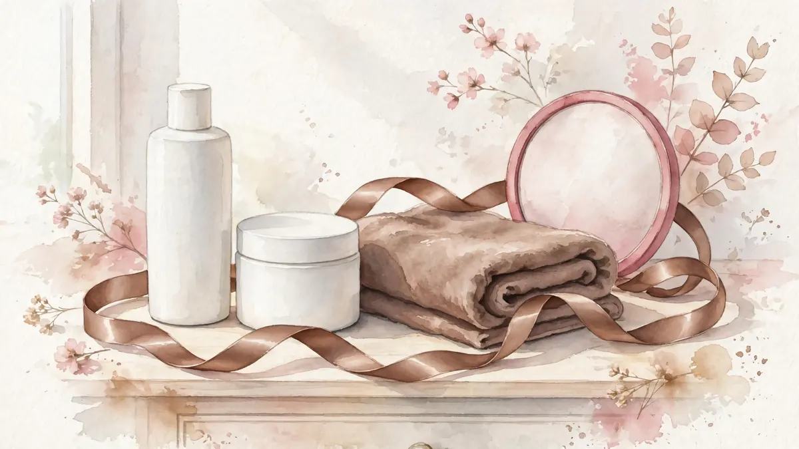
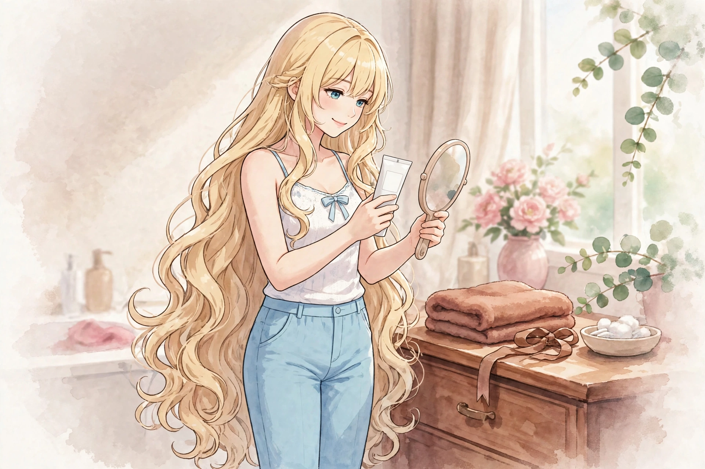

カラー・パーマ後の表示の見方

カラーやパーマをしたあとは、ヘアケアアイテムの選び方に迷いやすくなります。販売ページには「カラー後の髪に」といった案内も多く見られます。この記事では、そうした表示の読み方と、確認の順番を整理します。
表示の言葉は「対象」と「期間」を読む
「カラー後におすすめ」という表示を見たら、まず読みたいのは、その案内が「施術直後から」なのか「施術後の髪全般」なのか、という点です。商品によっては、施術から一定期間の使用を想定した案内が書かれています。また、「カラーの色持ちに配慮した処方」といった表現は、処方の設計意図を示すもので、効果の約束ではありません。表示は、設計の意図として読むのが基本です。
シャンプーの表示では、洗浄成分の種類や、色落ちへの配慮をうたう表現が手がかりになります。別記事「シャンプー選びで見る3つの観点」の成分表示の読み方も、あわせて参考になります。
施術直後の扱いは、美容室の案内が優先
施術直後の洗髪のタイミングや、当日・翌日の扱いについては、施術をした美容室の案内が最も確実です。カラーやパーマの種類、髪の状態によって注意点が異なるため、一般論よりも、自分の施術内容を知っている美容師の言葉を優先してください。施術の帰りに「今日の夜は洗っていいですか」と一言確認しておくと、迷いが減ります。
自宅のアイテムで迷った場合も、次回来店時に相談するのが確実です。使っているアイテムの名前をメモしておくと、相談がスムーズになります。
買い替え前に、確認したいこと
カラーやパーマを機にアイテムを買い替える場合は、今の髪の手触り（毛先の乾燥感、広がり方など）を言葉にしておくと、選ぶ基準が定まります。表示の「対象」に自分の状態が当てはまるかを照らし合わせる作業です。
なお、施術後に頭皮のかゆみや異常を感じた場合は、アイテム選びの問題として扱わず、美容室や皮膚科などの専門家に相談してください。
自宅でカラー剤を使う場合も、表示の読み方は同じです。箱の「使用上の注意」には、使用前の確認事項や、使用できない場合の条件などが書かれています。特に、毎回行うよう案内されている事前のテスト（パッチテスト）の手順は、省略せずに読んでおきたい部分です。美容室の施術と自宅のケアは方法が違っても、「表示と案内を先に読む」という基本は共通しています。
施術の間隔が空く方は、美容室で聞いた注意点をスマートフォンのメモに残しておくと、買い物のときに照らし合わせやすくなります。聞いたその場では覚えていても、数週間経つと曖昧になるものです。

セラフィナ「施術後のケアは、美容室の案内が一番の材料。表示とあわせて確認しよう」